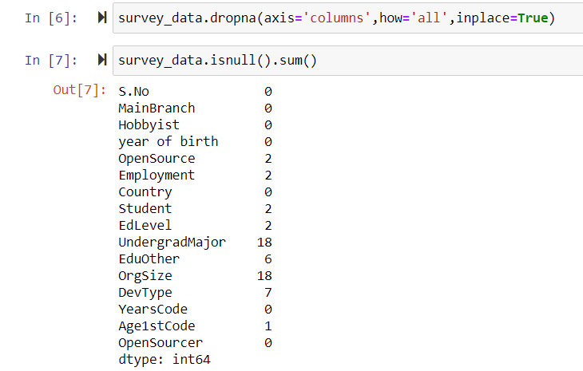

Data Mining > Data cleaning > Simulation
Simulation
DATA CLEANING USING JUPYTER NOTEBOOK
We already discussed about all the method's of data cleaning. Now here we just try to use each of them one by one according to their requirment's .
Lets start!!!!!
-
Now before applying any of the data cleaning method we need to know how many null values we have in our data set. After that only we can use any data cleaning method’s. For getting these null values we use the following command.
That command will give us all the column name and the count of the null values in that particular column.
-
Conclusion :
let's try to understand the following table -
Above table is showing that on the scale of 1 how many null values any column have. It is very difficult to remove all the error’s from the data set as some times we are not allowed to do changing in the data otherwise it will effect the result as well. Above table is showing that almost all columns are having 0.000000(means no null value) but some of them are having some null values. Here if we want, we can use any of the method as we discuss above for cleaning these columns but here we can see that there value is not 0.0000 but almost near of that value. It means that if we are not doing any change than also it’s fine to having some null values in these columns.
For doing any operation on the data set we need that data set in our jupyter notebook. Let we have our data set in .CSV format in our system so for getting that data in jupyter we have to use the following command
Method’s of data cleaning
Now following method’s can be used for cleaning the data. here we are not having any particular method for cleaning the data as every method is used for some particular cases.
Here we will try to use them one by one …..
1. Removing a column having all null value's :
Here we can see that we have to columns (i.e ETC1 and ETC2) which having all of there values null (as there null count is equal to total number of rows). It means that these columns are not useful for us and we can simply remove them. For removing such columns which having all of it’s values as null we use the following command-Here the word ‘inplace’ is used to do the change permanently in the data set. Now if we check total number of columns we get that we will having only 16 because these two will be removed from there 
2. Removing all the row's having atleast one null value :
In some cases we can use the following command -This will simply delete all the rows which will having atleast one null value. It will not check for any other condition.
Here we can see that we have only 66 rows but at the beginning we are having 99 rows means we have 33 rows which are having at least one null value. So dropna() simply delete these 33 rows from over data set. Disadvantage : here we may lose our usefull data also because if we are using dropna() then it delete that row from over data set but It may possible that the row which was deleted may have some important data but because of having some or at least one null value the complete row will be deleted . there for dropna() was not use particularly ( or used very rare cases).
3. Replace null value with their column’s mean or median :
Some times we have data of integer or float type which may have null values. In some cases we are not allowed to remove that null values rows as all the data may be deleted. So in that case we have some optional values (like mean , median, mode etc) of that column so that null values can be replaced by any one of these values. For getting these values we have to use the following command which will show the mean , median, mode and other values of all particular column’s.Now we can change any null value of any of these columns by mean, median, mode or any other values. Here we have some null values in age1stcode column so we can simply replace it with it’s mean value using following command.
.png)
After doing that over age1st column will have zero null values as all the null values are replaced by there mean .
4. Cleaning a column of mixed data type :
Some times our data may have mixed value’s like in that data set in the column “ year of birth” after year we having some not usable strings.
In such cases we can extract a string of particular length ( like here we need year which will be of length 4 so we extract the string of length 4 and other part will be ignored). Than we store that new year in new column “YOB” and than we replace our “year of birth” column with “YOB”.
Now our column “year of birth” will have correct data i.e the string of size 4 which represented year -
5. Removing all unnecessary :
Some time’s in our data set we may have some columns which are not usefull for us. So we can simply make a list of such columns and drop them from our data set.Now our data set will having 13 columns as these three columns are deleted from the data set.